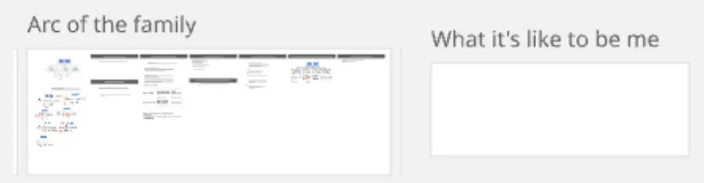

…existing code…
- Had my weekly microsolidarity crew call with my crew of 4 <3
- This time it was my turn so I talked about my “help the family” project
- ~10 mins of uninterrupted monologuing and then rounds of iterative dialogue
- Feel so supported & held! ❤️
- Realised that the meta level question here is “why don’t people improve their lives?”
Scrappy notes
- T → “I know how much helping people, being useful means to people, so I can imagine how painful it is to not be able to share this with your family”
- Johnson & the empty box
- I talked about how the sections of my planning Miro board for understanding the family are detailed, and the box of “what it’s like to be me” is totally blank b/c it doesn’t feel has pressing

- Johnson said that he thinks I should thoroughly fill this out, like an entire book’s worth, and then continue with the rest
- This feels counter to my “planning/strategy/wanting to get to actionable stuff” brain, but I think it’s very true that getting a much clearer model of what it’s been like to be me through all this will be very useful. Being able to lead with how I’ve felt, leading with authentic emotion rather than “doer” energy
- Johnson wants to support
- Incredible blessing that Johnson is one of the rare people who has successfully done this, successfully radically transformed a relationship with a parent, and now considering scaling to other family members
- Johnson as the first to do it, me as a cartographer, attempting to recreate the journey, mapping the terrain, what works and doesn’t work, etc
- C, NVC & “Yes Hunting”
- C had a useful NVC tip about “hunting for the yes”, where you only say things that elicit a “yes” in someone else (rather than e.g. giving unsolicited advice)
- Sounds like something that’s been on my mind re: “what would Socrates do?”, and thinking about a wise friend I have who does a coaching style which feels very Socratic, maieutics, aporia
- Approaching from heart space
- Crucial importance of leading from heart space, being open and honest and compassionate, not like left-hemisphere project brain, head space
- C best conversation w/ mum was after crying a bunch, breaking down
- Starting with needs
- Hard mode, and adult-to-adult mode, taking responsibility: “Here’s how I’ve related to you and your weight and I’m sorry”
- Adult-to-adult & child-to-adult
Johnson’s guidance
- Johnson is a rare person who has exactly done this exact thing - radically improved their relationship with a parent
- Johnson was superrrr excited, especially at me saying that I may stick around for 6 months to do this properly. “LET’S GOOOOO”
Johnson’s specific advice
- Support calls with friends after difficult conversations = get grounded 10x-100x faster
- Could change relationship drastically in a few weeks w/ “main project” energy & a tonne of social support
- Or 3-12 months otherwise
- Me: “what do you think of the ‘maybe I need to upskill first’” thing? → “my sense is that you’re around the same skill level I was when I started”
- Circling was helpful, maybe doing weekly circling would be useful. But then we’ve done it a decent amount in our crew calls
- Non-violent communication was also helpful
- Me: “how has your relationship with your mum changed after doing the project”
- Johnson: “foundation is totally different now”
- “Definitely the hardest thing I’ve ever done”
- Meta note that I was pleased with the questions I asked Johnson. Felt like I was doing the “learning how to thing” thing
Johson’s posts
As of a few years ago, I couldn’t spend more than a day or 2 with my mom without getting into a major conflict, with my mom usually either saying/yelling hurtful things like “I wish I didn’t have you as a son”, or giving me the cold shoulder for days. I amateur-ly diagnosed her as narcissistic, I didn’t want to spend time with her, and had no feelings of warmth towards her (mostly resentment and disdain).
Today, I enjoy a harmonious and loving relationship with my mom. This year and last year, I’ve lived with her for a month at a time and it’s been sweet and enjoyable (certainly we still have disagreements and frustration, but they feel light and easy to navigate). She trusts me and shares stuff with me she hasn’t shared before. I trust her way more and share much more of my life with her.
I’ve personally benefited far more than I could’ve possibly imagined. Some things to point at:
- My harsh inner critic went down ~95% overnight
- I completely stopped questioning if I was worthy of love
- I’ve had my first experiences that I would describe as divine
- It’s helped me deeply connect to ancestry and purpose and place in the world
- It’s help me become an adult
An unexpected benefit is that my parents’ relationship to each other improved! This is after a lifetime of trying and failing to improve their relationship.
An important foundation in my approach came from IFS - “can I love and accept my mom as she is, and if can’t, what is it in me that prevents that?”
In practice, it looked like:
- Initiate difficult conversation with her
- Try my best to slow down, stay connected to myself, share my experience rather than project my stories
- If I was successful at #2
1. The conversation would be deeply connecting and clear up misunderstandings.- If I was unsuccessful at #2
1. I’d get triggered
2. Leave, call a friend in the support group, journal
3. Come back and hash it out from a more grounded place- Rinse and repeat every day or few for 2.5 months
Honestly it was kinda brutal lmao. One of the hardest parts was not knowing - all I could experience was that things seemed to be getting worse and worse, harder and harder, and I had no idea if we were ever going to turn a corner.
Since then have come monumental realizations and self growth that wouldn’t have been possible without her. I’ve alluded to a few - feeling fundamentally loved, my shifting relationship with ancestry and place in the world, touching divinity, etc.. It’s fundamentally shifted how I see relationships. It instilled a deep humility in me - if I was so convinced that I knew my mom after 30 years, and was wrong about so many things, what else might I be wrong about?
I continue to be amazed at how much richness has come out of these experiences, and I have no idea how much further it will take me.
His draft post “On Forgiveness”
- I won’t add anything from here yet as it’s still in draft form. (I’m 80% sure he wouldn’t mind, tbf)